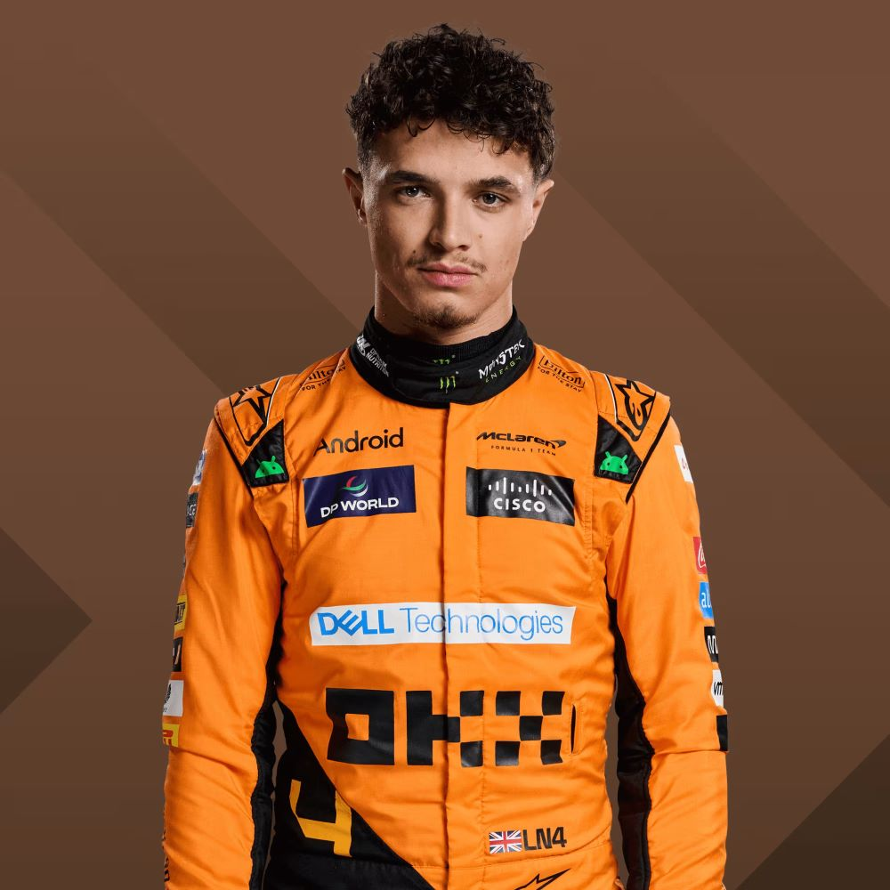
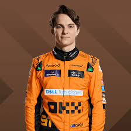

Lando Norris is a British-Belgian Formula 1 driver born on November 13, 1999, in Bristol, England, who races for McLaren. He began his racing career in karting, winning the World Karting Championship in 2014, and progressed through junior series, claiming the 2017 FIA Formula 3 European Championship. Norris debuted in Formula 1 in 2019 and has since earned multiple podium finishes, including his first at the 2020 Austrian Grand Prix and his maiden pole position at the 2021 Russian Grand Prix. Known for his humor and strong connection with fans, he also founded an esports and content brand called Quadrant. With his talent and charisma, Lando has become one of the most exciting young drivers in modern Formula 1.
Oscar Piastri is an Australian Formula 1 driver born on April 6, 2001, in Melbourne, who races for McLaren. He rose through the ranks of motorsport by winning three consecutive championships: the 2019 Formula Renault Eurocup, the 2020 FIA Formula 3 Championship, and the 2021 FIA Formula 2 Championship. After serving as a reserve driver for Alpine in 2022, Piastri made his Formula 1 debut with McLaren in 2023, impressing with his speed and maturity. He earned his first podium finish at the 2023 Qatar Grand Prix and also claimed a Sprint Race victory that weekend. Piastri is considered one of the most promising young talents in Formula 1, praised for his precision and adaptability.
| Name | Age | Country |
|---|---|---|
| Lando Norris | 25 | Britain |
| Oscar Piastri | 23 | Australia |
| Pato O'Ward (reserve) | 25 | Mexico |